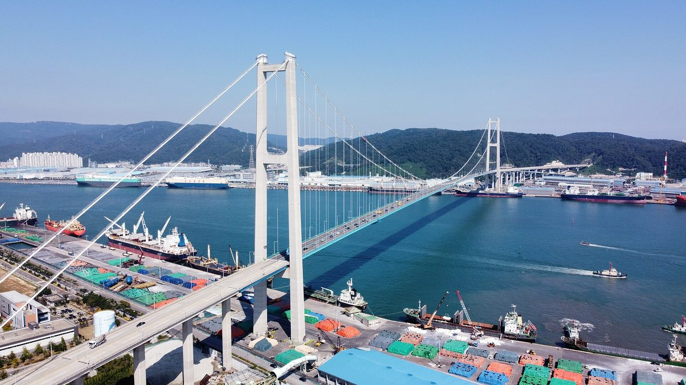

부울경 에너지포럼 "분산특구, 시·도 경계 넘어 생활권 단위로"…올해 공모는 재생에너지 100% '커뮤니티 마이크로그리드형'만

에너지공단 "660만㎡ 이하·책임공급 70% 이상, 12월 지정 심의"…울산은 남구·울주군 660만㎡ 신청 추진, 부산은 1단계 민간자본 2,094억 원 3단계 확대안
부산·울산·경남이 분산에너지 특화지역(분산특구)을 늘리려면 시·도 경계를 넘어 생활권 단위로 후보지를 함께 찾아야 한다는 제언이 29일 울산에서 나왔다. 울산시는 이날 울산전시컨벤션센터(UECO)에서 부울경 에너지 분야 관계자와 전문가 100여 명이 참석한 가운데 '부울경 초광역 경제동맹 에너지포럼'을 열었으며, 2024년 부산, 지난해 경남에 이은 세 번째 순회 포럼이다. 한국에너지공단 안상수 팀장은 지난해 처음 지정된 특구 7곳이 넓은 권역 중심으로 지정되고 재생에너지 활용이 부족한 데다 대부분 2028년 이후에야 완공된다는 한계를 짚고, 올해 공모는 같은 변전소나 생활구역 안에서 재생에너지 생산과 소비를 묶는 '커뮤니티 마이크로그리드형'으로 한정된다고 설명했다. 요건은 재생에너지 100%, 면적 660만㎡ 이하, 책임공급비율 70% 이상이며 아파트·주택마을·산업단지·바이오자원·전기차 충전형과 지자체 제안형이 예시로 제시됐고, 공단은 다음 달 사전검토와 관계부처 협의를 거쳐 12월 지정 여부를 심의하면서 실현·지속 가능성과 주민 수용성 등을 평가한다. 안 팀장은 시·도가 협력해 생활권별 후보지를 발굴하고 사업자를 공동으로 꾸려야 한다며 예산·조례 지원과 주민 의견 반영도 과제로 꼽았다. 울산연구원 조영환 박사는 남구·울주군 일원 660만㎡를 대상으로 한 커뮤니티형 신청 추진 상황과 2034년까지 분산에너지 2GW, 2035년 전력 자립률 300% 목표를 소개했고, 부산연구원 남호석 실장은 강서 에코델타시티와 6개 산업단지에서 부산항 신항, 가덕도 일대로 특구를 넓히는 3단계 구상과 함께 1단계에 2030년까지 민간자본 2,094억 원을 들여 ESS 500MWh를 갖추고 기업 전기요금을 최대 8% 낮추는 계획을 내놨다.
시민에너지 관점
올해 공모는 재생에너지 100%와 660만㎡ 이하라는 조건에 아파트·주택마을형을 예시로 들고 주민 수용성을 평가 항목에 넣어, 마을과 아파트 단지가 직접 전기를 만들고 이웃끼리 나눠 쓰는 사업이 처음으로 특구 제도 안에 들어올 길을 열었다. 그런데 이날 부울경 발표의 무게는 여전히 산업단지와 항만, 민간자본 2,094억 원 같은 대형 구상에 실려 있어, 생활권 특구마저 산단과 큰 사업자의 몫이 되는 것 아니냐는 우려가 나올 만하다. 주민이 지분을 갖고 운영에 참여하는 사업일수록 수용성 심사를 넘기 쉽고, 요금 절감과 발전 수익이 마을 안에 머물러 지역 안에서 만들고 쓰자는 특구의 취지에도 맞는다. 12월 지정까지 시간이 짧은 만큼, 부울경 시·도는 다음 달 사전검토 전에 주민협동조합과 아파트 공동체가 사업자로 들어올 수 있는 후보지와 공동 사업자 구성안부터 공개해야 한다.
출처: 부산일보 2026-10-29 권승혁 원문 보기
釜山・蔚山・慶南エネルギーフォーラム「分散特区、市・道の境界を越えて生活圏単位で」…今年の公募は再生可能エネルギー100%の「コミュニティ・マイクログリッド型」のみ
エネルギー公団「660万㎡以下・責任供給70%以上、12月に指定審議」…蔚山は南区・蔚州郡の660万㎡で申請を推進、釜山は第1段階で民間資本2,094億ウォンの3段階拡大案
韓国の釜山・蔚山（ウルサン）・慶尚南道が分散エネルギー特化地域（分散特区）を増やすには、市・道の境界を越えて生活圏単位で候補地を共に探すべきだとの提言が29日、蔚山で出された。蔚山市はこの日、蔚山展示コンベンションセンター（UECO）で、3市道のエネルギー分野の関係者や専門家約100人が参加する中「釜山・蔚山・慶南超広域経済同盟エネルギーフォーラム」を開いた。2024年の釜山、昨年の慶南に続く3回目の巡回フォーラムだ。韓国エネルギー公団のアン・サンス チーム長は、昨年初めて指定された特区7カ所について、広い圏域中心に指定され再生可能エネルギーの活用が不足しているうえ、大半が2028年以降にようやく完成するという限界を指摘し、今年の公募は同じ変電所や生活区域の中で再生可能エネルギーの生産と消費を束ねる「コミュニティ・マイクログリッド型」に限られると説明した。要件は再生可能エネルギー100%、面積660万㎡以下、責任供給比率70%以上で、マンション・住宅村・産業団地・バイオ資源・電気自動車充電型と自治体提案型が例示された。公団は来月の事前検討と関係省庁協議を経て12月に指定の可否を審議し、実現・持続の可能性や住民の受容性などを評価する。アン氏は、市・道が協力して生活圏ごとの候補地を発掘し、事業者を共同で構成すべきだとし、予算・条例による支援と住民意見の反映も課題に挙げた。蔚山研究院のチョ・ヨンファン博士は南区・蔚州郡一帯660万㎡を対象とするコミュニティ型申請の推進状況と、2034年までに分散エネルギー2GW、2035年に電力自立率300%という目標を紹介し、釜山研究院のナム・ホソク室長は江西エコデルタシティと6つの産業団地から釜山港新港、加徳島一帯へと特区を広げる3段階構想とともに、第1段階で2030年までに民間資本2,094億ウォンを投じてESS 500MWhを整え、企業の電気料金を最大8%引き下げる計画を示した。
市民エネルギーの視点
今年の公募は再生可能エネルギー100%と660万㎡以下という条件に、マンション・住宅村型を例に挙げ、住民の受容性を評価項目に入れたことで、村やマンション団地が自ら電気をつくり隣人同士で分け合う事業が初めて特区制度の中に入る道を開いた。ところがこの日の3市道の発表の重心は依然として産業団地や港湾、民間資本2,094億ウォンといった大型構想に置かれており、生活圏特区までもが産業団地と大手事業者の取り分になるのではないかという懸念が出てもおかしくない。住民が持ち分を持って運営に参加する事業ほど受容性の審査を通りやすく、料金の節約分と発電収益が村の中にとどまり、地域でつくって地域で使うという特区の趣旨にも合う。12月の指定まで時間が短いだけに、3市道は来月の事前検討の前に、住民協同組合やマンション共同体が事業者として加われる候補地と共同事業者の構成案をまず公開すべきだ。
出典: 釜山日報 2026-10-29 クォン・スンヒョク 原文を読む
釜蔚庆能源论坛："分散能源特区应跨越市道边界、以生活圈为单位"…今年招募仅限可再生能源100%的"社区微电网型"
能源公团称"面积660万㎡以下、责任供应70%以上，12月审议指定"…蔚山推进南区·蔚州郡660万㎡申请，釜山提出第一阶段民间资本2,094亿韩元的三阶段扩大方案
29日在蔚山举行的论坛上有人提出，韩国釜山、蔚山、庆尚南道若要扩大分散能源特化地区（分散特区），应跨越市道边界，以生活圈为单位共同寻找候选地。蔚山市当天在蔚山会展中心（UECO）举办"釜蔚庆超广域经济同盟能源论坛"，三地能源领域相关人士和专家约100人出席，这是继2024年釜山、去年庆南之后的第三次巡回论坛。韩国能源公团组长안상수（Ahn Sang-soo）指出，去年首批指定的7个特区以大范围区域为中心、可再生能源利用不足，且大多要到2028年以后才能建成，并说明今年的招募仅限于在同一变电站或生活区域内把可再生能源生产与消费结合起来的"社区微电网型"。申请条件为可再生能源100%、面积660万㎡以下、责任供应比率70%以上，示例模式包括公寓、住宅村、产业园区、生物资源、电动汽车充电型以及地方政府提案型；公团将在下月进行事前审查和相关部门协商后，于12月审议是否指定，评估内容包括可实现性、可持续性和居民接受度等。안상수组长表示，各市道应合作发掘各生活圈的候选地并共同组建项目主体，预算与条例支持以及反映居民意见也是课题。蔚山研究院博士조영환（Cho Young-hwan）介绍了以南区、蔚州郡一带660万㎡为对象的社区型申请推进情况，以及到2034年建成2GW分散能源、2035年电力自给率达到300%的目标；釜山研究院室长남호석（Nam Ho-seok）则提出从江西生态三角洲城和6个产业园区扩展到釜山新港、再到加德岛一带的三阶段构想，第一阶段计划到2030年投入民间资本2,094亿韩元，建设500MWh储能设施，使企业电费最多降低8%。
市民能源视角
今年的招募在可再生能源100%和660万㎡以下的条件之外，把公寓型、住宅村型列为示例，并将居民接受度纳入评估项目，首次为村庄和公寓小区自己发电、邻里分享电力的项目打开了进入特区制度的大门。然而当天三地发言的重心仍放在产业园区、港口和2,094亿韩元民间资本这类大型构想上，难免让人担心生活圈特区也会变成产业园区和大型企业的份额。居民持有股份并参与运营的项目越多，越容易通过接受度审查，电费节省和发电收益也留在村里，符合特区"本地生产、本地消费"的宗旨。距12月指定时间不多，釜蔚庆各市道应在下月事前审查之前，先公开居民合作社和公寓社区可以作为项目主体参与的候选地及共同项目主体组建方案。
来源: 釜山日报 2026-10-29 권승혁（Kwon Seung-hyeok） 查看原文
Busan-Ulsan-Gyeongnam energy forum urges cross-border, neighbourhood-scale bids for distributed energy zones as this year's call is limited to 100% renewable 'community microgrids'
Energy agency sets 6.6 million㎡ cap, 70% self-supply and a December decision; Ulsan prepares a 6.6 million㎡ bid in Nam-gu and Ulju-gun, Busan outlines a three-stage plan with 209.4 billion won of private capital in phase one
Busan, Ulsan and South Gyeongsang Province should look for candidate sites together at the level of everyday living areas, across city and provincial boundaries, if they want more distributed energy zones, experts said at a forum in Ulsan on 29 October. Ulsan city hosted the "Busan-Ulsan-Gyeongnam Super-Regional Economic Alliance Energy Forum" at the Ulsan Exhibition and Convention Center (UECO) with about 100 energy officials and experts, the third rotating forum after Busan in 2024 and South Gyeongsang last year. Ahn Sang-su, a team leader at the Korea Energy Agency, said the seven zones first designated last year were drawn around large areas, made little use of renewables and will mostly not be completed until after 2028, and explained that this year's call is limited to the "community microgrid" type, which links renewable generation and consumption within the same substation area or living zone. The requirements are 100% renewable energy, an area of no more than 6.6 million square metres and a responsible self-supply ratio of at least 70%, with apartment, housing village, industrial park, bio-resource, EV charging and local-government-proposed models given as examples; the agency will run a preliminary review and inter-ministry consultation next month and decide on designations in December, assessing feasibility, sustainability and resident acceptance. Ahn said cities and provinces should cooperate to find candidate sites for each living area and form project operators jointly, adding that budget and ordinance support and reflecting residents' views are also tasks. Cho Young-hwan of the Ulsan Research Institute presented Ulsan's planned community-type bid covering 6.6 million square metres in Nam-gu and Ulju-gun and its targets of 2GW of distributed energy by 2034 and 300% power self-sufficiency by 2035, while Nam Ho-seok of the Busan Research Institute outlined a three-stage expansion from Gangseo Eco Delta City and six industrial parks to Busan New Port and then Gadeok Island, with 209.4 billion won of private capital by 2030 in the first stage to build 500MWh of energy storage and cut companies' electricity bills by up to 8%.
Citizen Energy View
By pairing the 100% renewable and 6.6 million square metre conditions with apartment and housing village models and scoring resident acceptance, this year's call opens a door, for the first time, for villages and apartment complexes that generate their own power and share it among neighbours to enter the zone system. Yet the weight of the three regions' presentations still rested on industrial parks, ports and large plans such as 209.4 billion won of private capital, so it is fair to worry that even neighbourhood-scale zones will end up in the hands of industrial estates and big operators. Projects in which residents hold equity and take part in running them are more likely to pass the acceptance test, and they keep bill savings and generation income inside the community, which is exactly the "produce locally, use locally" aim of the zones. With little time left before December, the three regions should publish, before next month's preliminary review, candidate sites and joint operator plans that let residents' cooperatives and apartment communities take part as project operators.
Source: Busan Ilbo 2026-10-29 Kwon Seung-hyeok Read the original